内存管理
- OS一般在地址的？高 / 低 高地址
- 虚拟内存机制下的页表关系 非虚拟地址下的页表关系
- 连续分配的其他算法
- 驻留集和工作集
- 驻留应该大于工作
- swap space
- memory mapping file 将文件处理转换成了读写内存
- TLB 一次访存
- 一级页表 两次访存
- page fault + 一级页表 两次访存 后 再执行一次 此时的内存是否在TLB中？
3.1 内存保护
在内存的基础设计中，给每个Process在内存中分配一块连续空间，其只需要检查该Process的访存是否在这个连续空间即可
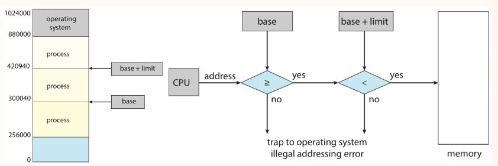
这里引入了 base 和 limit 两个特殊的寄存器，内存的保护通过内存管理单元 MMU 实现，MMU会在Process每次访问内存的时候，通过 base 和 limit 进行一下检查
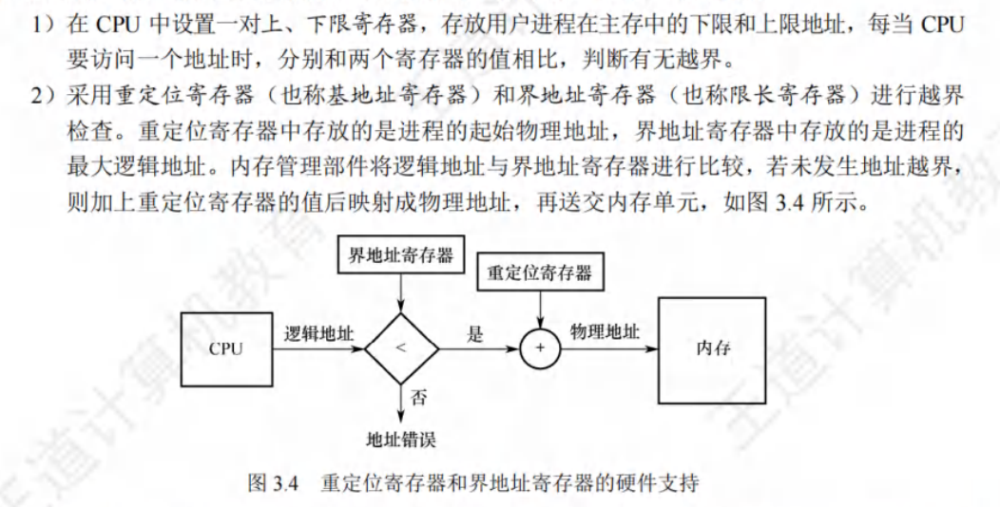
3.2 程序的链接和加载
地址绑定
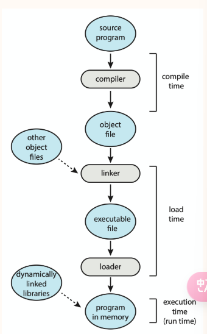
静态代码程序变为动态的进程，大概需要以上几步
加载技术
而在 load time 的时候，程序的load存在三种方式
- absolute load 就直接使用绝对地址
-
relocatable load 存在两种形式
-
static 在装入内存的时候确定地址，根据装入时的位置进行偏移
- dynamic 在运行的过程中才确定地址，会在运行中换入换出
由于多道技术的存在，操作系统内部往往存在多个进程。动态装载机制使得我们灵活地使用内存资源。
如果一个程序还没被调用，它以 relocatable load format 存储在磁盘上，当其被调用的时候可以被动态地加载到内存中。对于那些大量但是不经常访问的代码片段，可以节省很多内存空间，例如错误处理代码。
该项技术应该由开发者开发，其不是OS的内置功能
link技术
- 静态链接 直接把程序和库函数链接成一个完整的模块，需要修改相对地址，并且变换外部调用符号为相对地址
- 装入时动态链接，在装入内存的时候，边装入边链接，便于修改和更新
- 运行时动态链接，在运行到对应模块的时候，才进行链接，可节省内存空间
这项技术主要指的是动态链接库 dynamic linked libraries. 这类库可以被多个进程共享，也被称为共享库。
该项技术需要OS的支持
3.3 连续分配*
-
Fixed Partition: 在笔记中的这部分就是将内存划分为相等大小的块，然后分配给process使用
-
缺点在于有Internal Fragmentation，还有进程太大放不进来的问题
- 在王道中Fixed partition还可以划分成不同大小的block，但是这些大小都是初始固定的
-
Variable Partition 如下图
-
缺点在于有 External Fragmentation
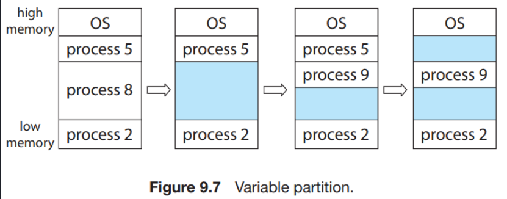
并且基于该分配方法，我们还有 Dynamic Storage-Allocation Problem
-
First Fit 分配首个足够大的hole
-
容易在中低地址产生大量碎片
-
Best Fit 分配足够大的最小hole
-
需要遍历，同样有碎片
-
Worst Fit 分配最大的hole
-
需要遍历，在中小进程较多的情况下性能较好（相对碎片少）
基于索引分配算法
上述的分配算法都是顺序的分配算法，可能会比较低效
这部分来自于王道
3.4 分页管理
分页技术的目标是减轻进程"必须使用连续内存”这个限制，所谓连续内存是一种逻辑上的连续，也就是虚拟地址的连续即可。
但这不意味着物理地址的连续没有意义，大量不连续的物理地址会导致很低的访问效率
我们设计一个折中的方案，将物理内存划分为固定大小的块，称为 帧 frames 每个帧对应虚拟地址中等大的 页 pages
页 & 虚拟地址
对于一个虚拟地址来说，可以划分为如下状态
一般来说我们取 4Kb Page Size，那么 page offset 是 \(\log_2 4096=12\)
1 2 3 4 | |
映射过程
虚拟地址到物理地址的映射，可以通过下图描述
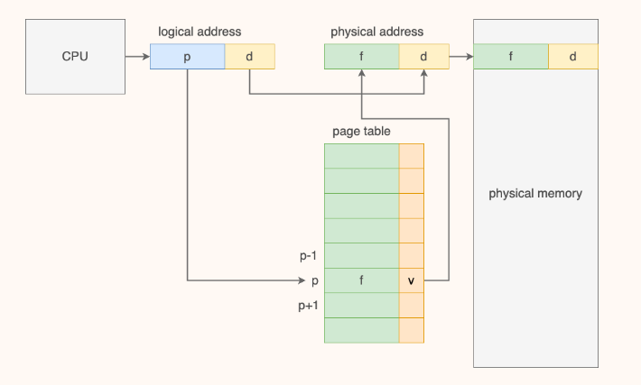
在 Page table 中往往会有一些bit来实现保护机制，因为有一些page还未实现映射
而在page table中，其实只存储了块号，而不存储页号，页号是隐含在连续排列的顺序中
对于 page size 的选择而言
- page size 越大，页表项少，页更容易被浪费，但对于磁盘而言，单次大量的传输效率更高
- page size 越小，页表项多，需要更多内存和时间处理页表
硬件支持
页表是 per-process data structures 作为一个进程的元数据被维护。但是页表本身所占的空间较大，因此其被放在内存里，我们通过寄存器维护一个指向页表的指针来维护页表。
这个寄存器称为 页表基址寄存器（page-table base register PTBR）
当该进程不处于running的时候，PTBR被存储在PCB中
TLB机制
内存访问对于现代CPU来说还是太慢了，由于页表本身在内存中，支持虚拟地址直接让我们的内存访问次数翻倍了，因此我们需要采取一些措施
我们引入 TLB 页表缓存 translation look-aside buffer, 作为MMU的一部分，页号和帧好以key-value对的形式存储在TLB中，不仅访问速度快，并且允许并行的查询所有key-value对
但是TLB本身一般较小，往往只有 32 - 1024 个表项。作为一个缓存，会存在miss，我们也需要一定的缓存替换机制，例如（LRU，round-robin to random等）
TLB允许特定的表项被 wired down，这些表项不允许被替换
TLB并不是 per-process data structures
在context switch的时候，我们需要清空TLB，进行flush操作，否则会产生错误。
或者我们在TLB的表项中增加一个地址空间标识符（address-space identifers ASID), 在查询页号的时候也比较ASID，只有ASID一致才算匹配成功
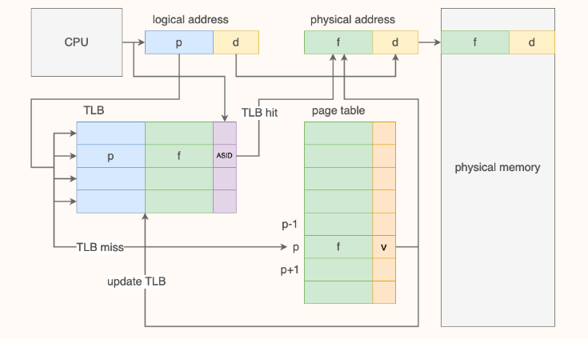
定量分析 TLB
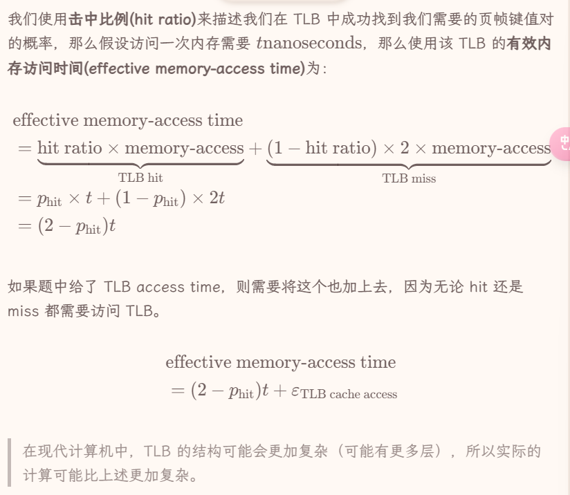
共享页
虚拟地址和物理地址页的映射并非总是一对一，多个页可以对应一个frame，这就是共享 shared page
例如多个进程可能使用同一个库，那么这个库所在的pages就可以做共享，以减少内存开销
分页可以允许进程间共享代码，例如同一程序的多个进程可以使用同一份代码，只要这份代码是 reentrant code （or non-self-modifying code : never changes between execution）
例如我们在进程通信中提到过共享内存实现进程间通信，这个机制就可以通过共享页实现
**页表设计改进 ***
首先我们考虑页表现在的存在方式，页表占据的是一块连续的物理内存（其本身是虚拟地址的基础，因此其本身不是虚拟地址）
并且每个映射我们都需要存储，我们来看看一个32位的虚拟地址，12位的offset，就有20位的页号，也就有\(2^{20}\) 个表项，假设一个表项 4 bytes，就有 4 Mb 的物理内存，实在太大了
那么我们可以采用一些机制来解决这个问题
-
分层页表
-
我们可以将页表设计成分层的机制，如果上层页表节点下的表项都没有映射，可以直接设置invalid，一定程度上，可以节省维护页表所需的内存空间
- 其有一个隐含的要求是根页表的大小不能超过一个page *
-
哈希页表
-
我们要支持 random access 就要维护一个连续的页表，这个连续是虚拟地址上的连续，其实很多页表项都是invalid的，但是因为要维护random access的性质，就需要让其连续
- 但是另一种random access的就是维护hash map，以页号的hash为索引，维护一个链表
- hash page table 的访存分析 *
-
反式页表
-
我们不维护虚拟地址到物理地址的映射，而是维护物理地址到虚拟地址的映射
- 不需要一个进程一个页表，整个OS共用一个页表
- 不支持共享页并且每次虚拟地址查询要遍历整个页表，相当于失去了random access的性质
- 其他 段式设计等等
3.5 分段存储和段页存储 *
分段管理的设计考虑的是用户和程序员，以满足方便变成，信息保护与共享，动态增长和动态链接等多方面需要
进程的地址空间是二维的，有一个段号，有一个段内偏移量，每个段都从0开始编址
分段管理是二维的，而分页管理是一维的
段页式管理
一个进程一个段表，一个段一个页表
3.6 虚拟内存基础概念
address space 的大小是由寻址的位数确定的
虚拟内存技术扩展了内存的概念，引入了page fault，使得内存的管理更加灵活
page fault有三种情况，这三种情况均为异常
- 当前的进程的页表中并没有这个虚拟地址对应的 page；
- 权限不符，例如试图运行某个权限位是
RW- 的 page 中的代码，或者试图写入某个权限位是R-X 或R-- 的 page 中的某个内存单元； - 当前虚拟地址是合法的，但是对应的 page 被 swapped out 了。
前两种是报错，最后一种，OS会把进程阻塞并且完成swap
page fault 处理机制
- 检查PCB的内部表（VMA），确认这是一个需要加载的page还是一个错误访问
-
从可用帧列表中拿出frame用来写入
-
若没有可用帧，则执行替换策略
- 从后备存储读取内容，并且写入frame
- 完成读写之后，更新内部表和页表映射
- 重新执行引起 page fault 的 instruction
page fault的正常处理是非常慢的，因此我们需要尽可能减少page fault的产生
3.7 用户地址和内核地址
3.8 Demand Paging
demand paging 指的是只把被需要的页载入内存
- pure demand paging 在被需求之前，任何page都不会被载入内存
- pre-paginng 上述机制在程序开始之前会产生大量的page fault，我们可以再一开始将需要的页一起存入内存
引入交换技术之前，我们的访问地址如果是invalid，就说明程序出错了，访问了不该访问的地址；而引入交换技术之后，即便访问的地址是invalid，我们应该生成一个异常 page fault，借此来检查应该进行页交换还是报错
- major/hard page fault 缺少的页不存在于内存中
-
minor/soft page fault 缺少的页存在于内存中，但是未建立映射
-
可能是需要共享其他进程的page
- 进程可能引用一个之前被释放的page，但是那个page还未被flush机制驱逐
可用帧列表
在 demand paging 系统中，页是动态映射到帧中的，我们需要维护一个可用帧列表（free-frame list）用来记录当前哪些帧是空闲的
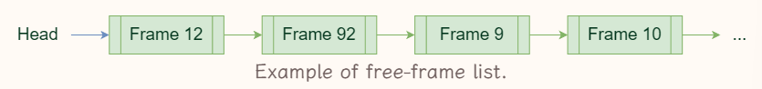
在系统启动后，将所有可用的帧都加入free-frame list，当有用户需要物理内存的，取出一页将其擦除，再给用户
这个擦除行为，称为 zero-fill-on-deman
free-frame buffer pool
如果我们总是等待 free-frame list 为空的时候再进行替换策略，不可避免地会阻塞当前进程，对此我们可以采取一些方法在防止阻塞
- 引入一个抽象的buffer，保证 free-frame list 总是有一定数量的空闲帧，少于这个帧数的时候就独立地运行一个替换进程
- 或者我们是用一个负反馈控制，维护一个上界和下界，当free-frame数量小于下界的时候，一类叫做 reapers 的内核例程就开始执行替换策略，直到free-frame数量触碰上界
-
如果free-frame非常少，达到了一个非常低的界，就出现了OOM（out-of-memory），此时一个叫 OOM killer 的进程就会杀死一个进程，腾出内存空间
-
Linux中，每个进程有一个OOM score，score与进程使用内存的百分比有关，谁内存用的最多就最有可能被杀死
3.9 page replacement algorithms
置换策略的基本流程如下
- 使用置换算法 replacement algorithm 决定哪个frame是victim frame
- 如果有必要，例如page为脏page，则需要将 victim frame 写入 后备存储
- 更新相关元信息
- 返回这个 victim frame 作为 free-frame
为了检查该page是否被写过，我们需要设置一个修改位（dirty bit 或者 modified bit）来记录页是否被修改过，若有写行为，则把dirty bit写为1
随后我们来探讨一些置换算法
OPT
理论上最优的做法，就是能有最低的 page fault rate，就是将现在能替换的页中，未来最久时间不会访问的页作为 victim frame 进行替换
但是这种做法仅作为理论最优进行建模，因为实际很难预测一个frame下一次使用在什么时候
FIFO
先进先出策略，选择正在使用的，最早进入内存的frame作为 victim frame，我们在内存中维护一个FIFO队列就可以解决这个问题
- 优点是实现简单
- 缺点是，最早载入的frame也可能是频繁使用的frame，这个建模与OPT并不相近
LRU
Least recently used，就是最近很久没被用过的page替换出去，LRU常常被认为是和OPT较为相近的建模，是常用的replacement algorithm
那么我们来看看如何实现LRU
我们一般把下面两种算法称为 stack algorithms
-
计数器，使用一个计数器来标记一个帧多久没被使用过
-
当一个frame被使用的时候将计数器归零
- 每个计数器都要定期更新
- 需要考虑计数器溢出
- 需要找到LRU的那个frame的时候，需要遍历，或者我们使用一个数据结构去维护frame序列
-
链表序列，用一个双向链表来维护一个有序序列，frame在序列中的位置来表示它们最近被使用的时间顺序
-
当一个frame被使用的时候，如果其在链表中，则将其移动到链表头部
- 若其不再链表中，则将其加入到链表头部
- 此时LRU的frame总在序列末尾
缺点在于
- 维护每个frame的clock显然是耗费资源和时间的
- 每次内存访问都需要维护，开销很大
- 链表序列中，找到对应的frame也很麻烦
LRU Approximation
完整地执行LRU算法是美好的，但是存在较大的开销，因此我们往往会采用LRU的近似算法
3.10 Allocatin of Frames
首先，对于单个进程而言，存在一个较严格的上下界
-
分配一个process的frames数量不能大于free-frame的总量
-
the maximum number of frames per process is defined by the amount of available physical memory
-
分配一个process的frames数量不能小于“执行每一条指令所需要涉及的frames”
-
the minimum number of frames per process is defined by architecture
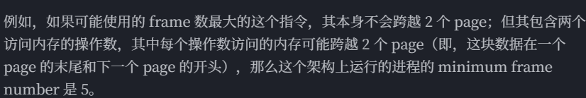
我们可以采取两种方式
- global replacement 从全局的frame list中获取
- local replacement 提前规定好哪些frame给哪个进程，从中去分配
分配算法 frame-allocation algorithm 按照分配的帧大小来份，主要有那么几种
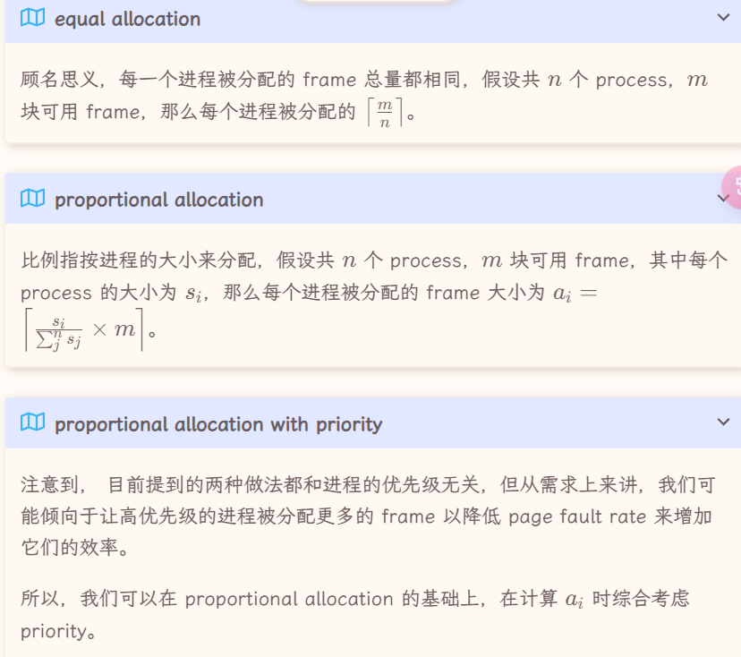
分配各每个进程的frame数量都是会动态变化的
在多核设计下，有一种设计叫做NUMA，在这种设计中，不同的CPU都有自己更快访问的内存
3.11 一些独立的知识点
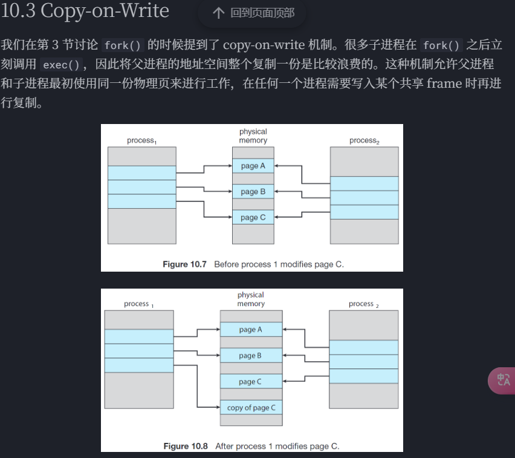
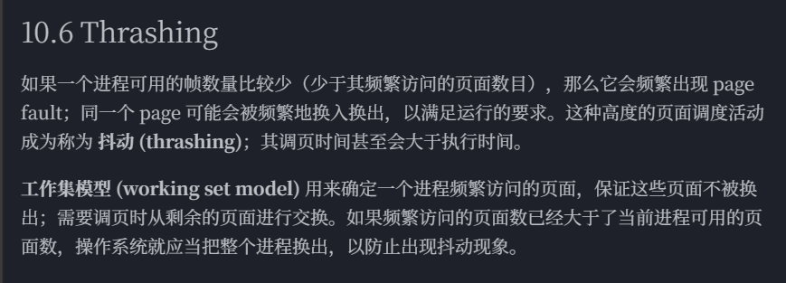
- 所有的替换策略都有可能Thrashing
习题
王道
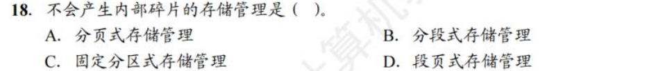
- 分段存储不会产生内部碎片
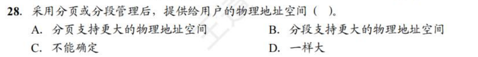
- C
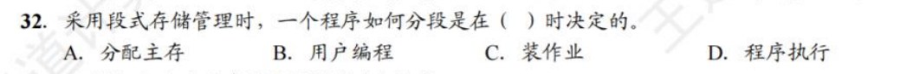
- B
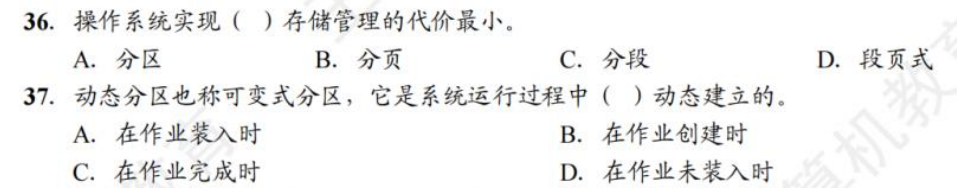
- A A
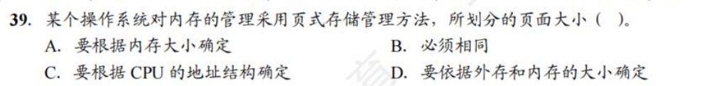
- B
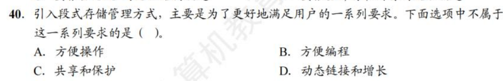
- A
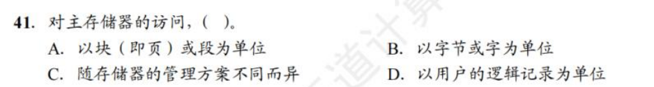
- B
- A
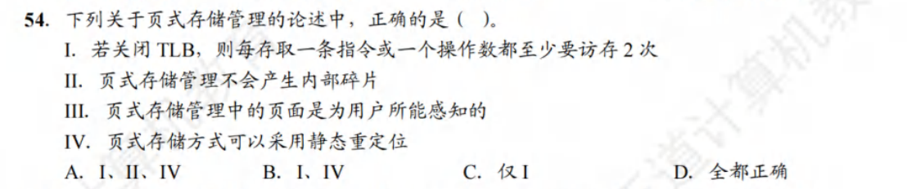
- C 页式存储不可静态重定位
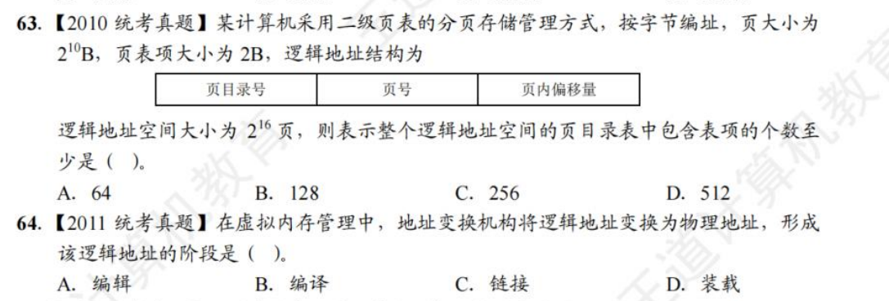
- BC

- BB
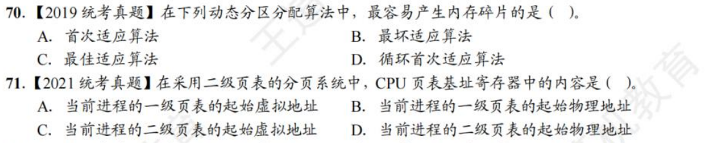
- CB
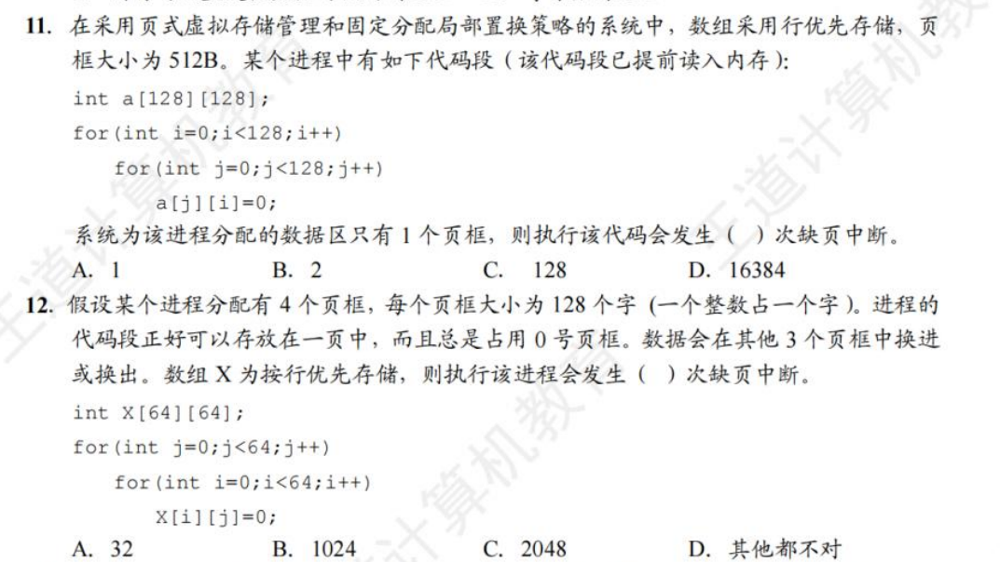
-
DC
-
虚拟存储器的最大容量有计算机的地质结构决定
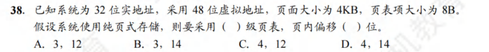
- C
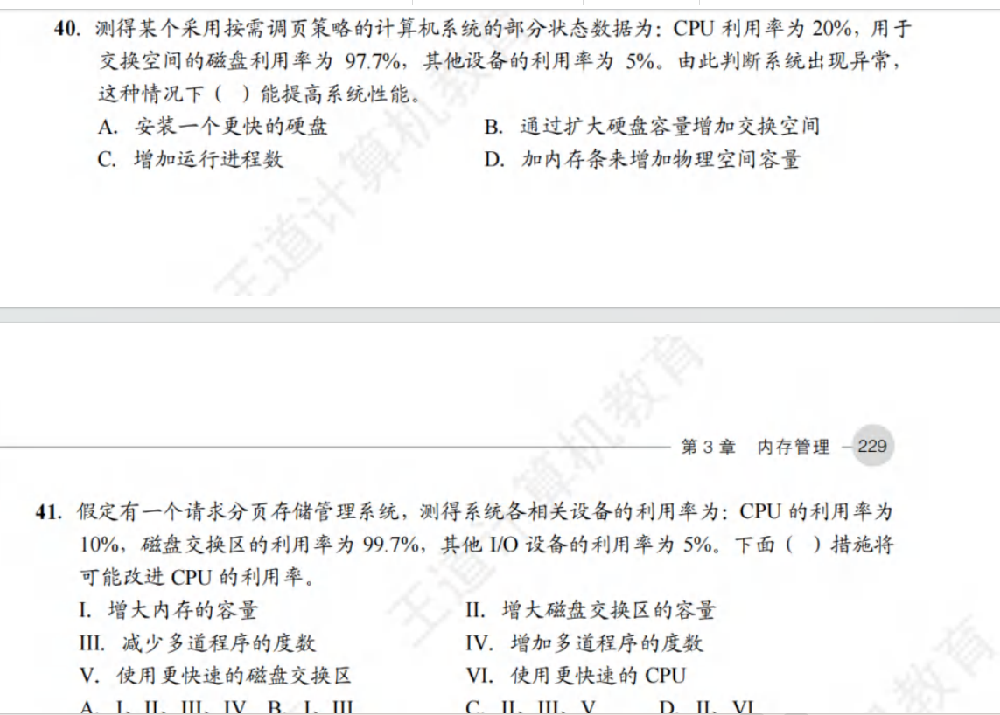
- D B 原因都是内存不够
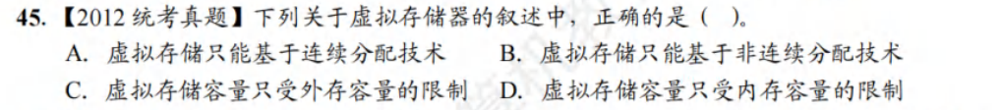
- B
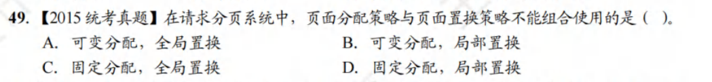
jjm
- 当磁盘
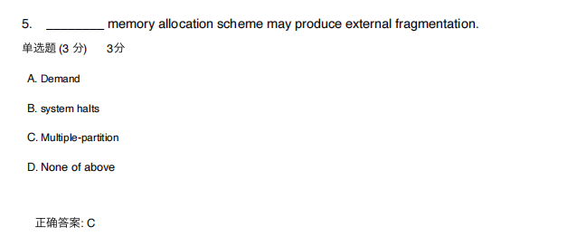
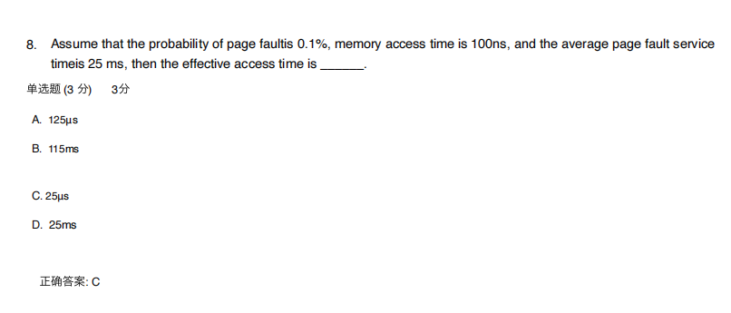
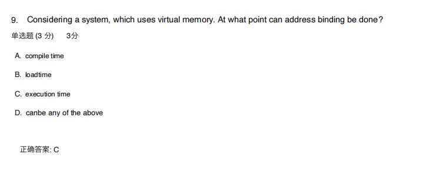
- 虚拟内存 都是执行期间内存绑定
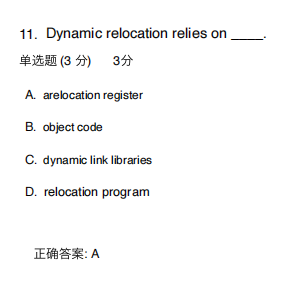
- 几个定位机制要去看看
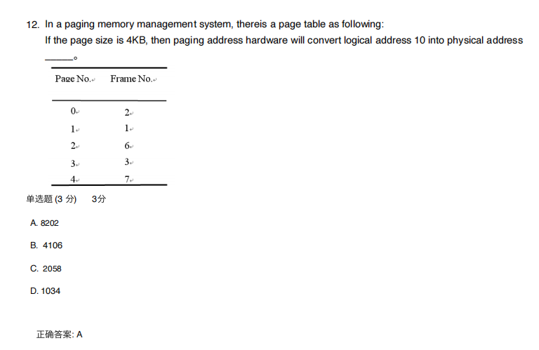
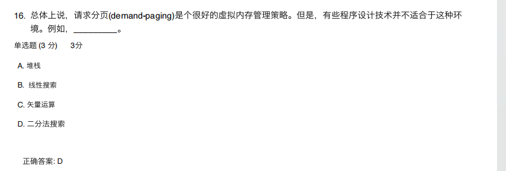
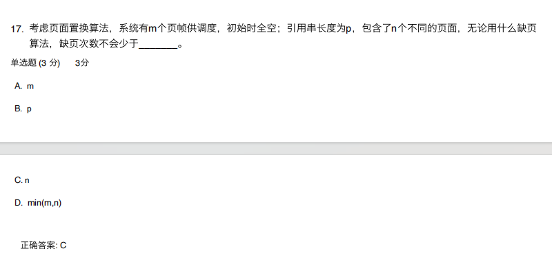
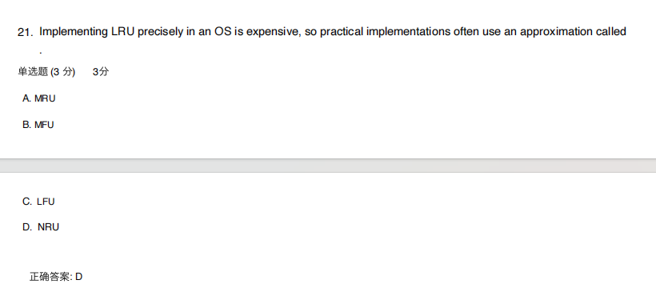